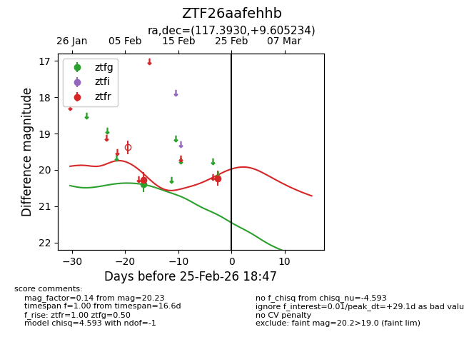
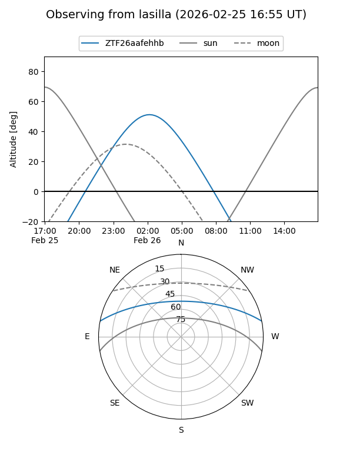
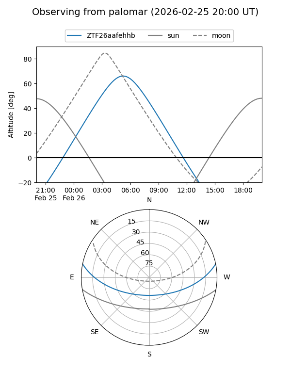
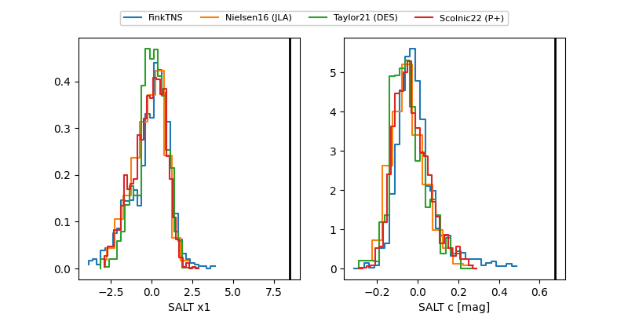

ZTF26aafehhb
Target ZTF26aafehhb at 2026-02-25 18:49
Aliases and brokers:
FINK: link
Lasair: link
ALeRCE: link
alt names
ZTF26aafehhb (ztf,fink_ztf)
Coordinates:
equatorial (ra, dec) = 117.3930,+9.60523
equatorial (HMS+DMS) = 07:49:34.32,+09:36:18.84
galactic (l, b) = (210.7911,+17.23510)
Flags:
Photometry:
last ztfg=20.40, ztfr=20.23
1 ztfg, 2 ztfr detections
Lightcurve

Visibility


Additional plots
